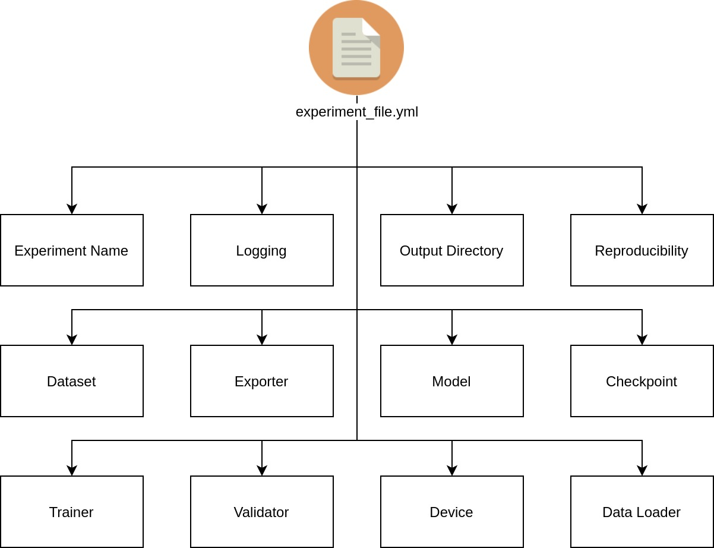

Experiment File Configuration¶
A YAML experiment file is needed to navigate all of Vortex pipelines. This experiment file will contain and track all configurations during all pipelines and can be a single source of information on how a model is developed. Several examples of experiment file can be inspected on this link. In this guide, we will cover all available sections that can be configured.

All available configurations is listed below :
Experiment Name¶
Flagged with experiment_name key (str) in the experiment file. This field acts as an experiment identifier and is related to the experiment output directory where the trained model,reports, backups,and etc. will be dumped. E.g. :
experiment_name: shufflenetv2x100_softmax_cifar10
Logging¶
Flagged with logging key (dict or str(None)) in the experiment file. This field denotes logging providers that can be used for experiment logging, such as tensorboard, comet-ml, etc. The supported logging provider listed in the logging provider section. E.g. :
logging: {
module: comet_ml,
args: {
api_key: HGhusyd76hsGiSbt27688,
project_name: vortex-classification,
workspace: hyperion-rg
},
pytz_timezone: Asia/Jakarta
}
Arguments :
module(str) : denotes a specific logging provider moduleargs(dict) : the corresponding arguments for selectedmodulepytz_timezone(str) : the setting of the recorded experiment run timezone in Vortex local system. All timezone settings can be found in this link
Output Directory¶
Flagged with output_directory key (str) in the experiment file. This configuration set the location where experiment's output directory will be created. E.g. :
output_directory: experiments/outputs
Device¶
Flagged with device key (str) in the experiment file. This configuration set device to run experiment. E.g. :
device: 'cuda:0'
Arguments :
device(str) : set the device to run the experiment in pipelines, whether using CPUcpuor cuda GPUcuda. To use specific GPU device, append:{i}tocuda, E.g.cuda:0for GPU index 0,cuda:1for GPU index 1
Reproducibility and cuDNN auto-tune¶
THIS CONFIGURATION IS OPTIONAL (MAY IMPACT TRAINING PERFORMANCE)
Flagged with seed key (dict) in the experiment file. This configuration setting can be set if the user wants a model training experiment reproducibility. However as noted in this reference, completely reproducible results are not guaranteed across PyTorch releases, individual commits or different platforms, even with identical seeds. However we still can make the computation deterministic, to produce similar results. For further information, you can check this link. E.g. :
seed: {
torch: 0,
numpy: 0,
cudnn: {
deterministic: True,
benchmark: False,
}
}
Arguments :
torch(int) : set the Pytorch seednumpy(int) : set the Numpy seed-
cudnn(dict) : cuDNN configurations, sub-arguments :deterministic(bool) : set the Pytorch computation to be deterministicbenchmark(bool) : set the cuDNN auto-tuner
The cudnn args only need to be specified if the user trains using NVIDIA GPU (CuDNN backend). Additionally, by using this seed configuration you also use cuDNN auto-tune capability by using the following configuration
seed: {
cudnn: {
benchmark: True,
}
}
Dataset¶
Flagged with dataset key (dict) in the experiment file. This is the configurations of the dataset to be used in the pipeline, which includes the dataset name for train and eval dataset. E.g. :
dataset: {
train: {
name: VOC0712DetectionDataset,
args: {
image_set: train,
},
augmentations: [
{
module: albumentations,
args: {
transforms: [
{ transform: HorizontalFlip, args: { p: 0.5}},
],
bbox_params: {
min_visibility: 0.0,
min_area: 0.0
},
visual_debug: False
}
},
# Example if you want to add another augmentation module
# {
# module: imgaug, # NOTES : `imgaug` module is not implemented yet, just example
# args: {
# transforms: []
# }
# }
]
},
eval: {
name: VOC0712DetectionDataset,
args: {
image_set: val
}
},
}
Arguments :
-
trainANDeval(str) (evalis Optional): denotes the configuration of training and validation dataset respectively, ifevalis not provided, in-loop validation process will be skipped.evalis mandatory for validation pipeline. Sub-arguments :dataset(str) : the dataset class names which will be used, mentioned in getting started section step 1.args(dict) : the corresponding arguments to the respectivedatasetclass initialization-
augmentations(list[dict]) (trainonly) : the augmentation configurations for training dataset. Augmentation modules provided in the list will be executed sequentially. sub-arguments (list members as dict) :module(str) : selected augmentation module, see augmentation module section for supported augmentation modulesargs(dict) : the corresponding arguments for selectedmodule
Data Loader¶
Flagged with dataloader key (dict) in the experiment file. This is the configurations of dataloader to be used in the training. E.g. :
dataloader: {
module: PytorchDataLoader,
args: {
num_workers: 0,
batch_size: 16,
shuffle: True,
},
}
Arguments :
-
dataloader(dict) : denotes the configuration of the dataset iteratormodule(str) : specify the dataloader module to be used, supported data loader modules is provided at data loader module sectionargs(dict) : the corresponding arguments for selectedmodule
Trainer¶
Flagged with trainer key (dict) in the experiment file. This configuration set how we train and several other configurations related to training iterations. E.g. :
trainer: {
optimizer: {
method: SGD,
args: {
lr: 0.001,
momentum: 0.9,
weight_decay: 0.0005
}
},
lr_scheduler: {
method: CosineLRWithWarmUp,
args: {
t_initial: 200,
t_mul: 1.0,
lr_min: 0.00001,
warmup_lr_init: 0.00001,
warmup_t: 3,
cycle_limit: 1,
t_in_epochs: True,
decay_rate: 0.1
}
},
epoch: 200,
save_epoch: 1,
save_best_metrics: [loss,mean_ap],
driver: {
module: DefaultTrainer,
args: {
accumulation_step: 4,
}
}
}
Arguments :
-
optimizer(dict) : configuration for optimization algorithm. Sub-arguments :method(str) : optimization method identifier, currently support all optimizers supported by Pytorch listed in this linkargs(dict) : the corresponding arguments to the respective optimizermethod
-
lr_scheduler(dict) : methods to adjust the learning rate based on the number of epochsmethod(str) : scheduler method identifier, supported scheduler methods is provided at learning rate scheduler sectionargs(dict) : the corresponding arguments to the respective schedulermethod
-
epoch(int) : number of dataset iteration (epoch) being done on the training dataset. 1 epoch is 1 dataset iteration save_epoch(int, optional) : number of epoch before a model checkpoint being saved for backup.-
save_best_metrics(str, list, optional) : list of metrics or single metrics name to be monitored to save the best weight. Available options:loss: per-epoch training loss
For detection task :
mean_ap: validation mean-average precision metrics
For classification task :
accuracy: validation accuracy metricsprecision (micro): validation micro-average precision metricsprecision (macro): validation macro-average precision metricsprecision (weighted): validation weighted-average precision metricsrecall (micro): validation micro-average recall metricsrecall (macro): validation macro-average recall metricsrecall (weighted): validation weighted-average recall metricsf1_score (micro): validation micro-average f1_score metricsf1_score (macro): validation macro-average f1_score metricsf1_score (weighted): validation weighted-average f1_score metrics
-
driver(dict) : the mechanism on how a training is done in a loop ( iterated overnepochs ). Sub-arguments :module(str) : training driver identifier. Supported training driver methods is provided at training driver sectionargs(dict) : the corresponding arguments to the respective training drivermodule
Validator¶
Flagged with validator key (dict) in the experiment file. This configuration set the validation process in the training iteration. E.g. :
validator: {
args: {
score_threshold: 0.9,
iou_threshold: 0.2,
},
val_epoch: 10
}
Arguments :
-
args(dict) : additional arguments needed for validation process, including but not limited to arguments for model postprocessing which dependent on the model itself. For example :-
For several detection models ( if needed ):
-
score_threshold(float) : threshold applied to the model’s predicted object confidence score. Only objects with prediction scores higher than this threshold will be considered true objects, else considered as background. -
iou_threshold(float) : threshold for non-maxima suppression (NMS) intersection over union (IoU)
-
-
For classification :
No additional arguments for this task, you can leave
argswith empty dict{}
-
-
val_epoch(int) : periodic number of epoch when the validation process will be executed in the training loop
Model¶
Flagged with model key (dict) in the experiment file. This configuration set the selected deep learning model architecture for the specific task. E.g. :
model: {
name: FPNSSD,
preprocess_args: {
input_size: 512,
input_normalization: {
mean: [ 0.5, 0.5, 0.5 ],
std: [ 0.5, 0.5, 0.5 ],
scaler: 255
}
},
network_args: {
backbone: shufflenetv2_x1.0,
n_classes: 20,
pyramid_channels: 256,
aspect_ratios: [ 1, 2., 3. ],
pretrained_backbone: True,
},
loss_args: {
neg_pos: 3,
overlap_thresh: 0.5,
},
postprocess_args: {
nms: True,
}
}
Arguments :
name(str) : model name identifier. List of supported models can be found in models zoo section. E.g. :-
preprocess_args(dict) : configurations for input data preprocessing. Sub-arguments :input_size(int) : input data size, input image will be resized to square while maintaining aspect ratio, by padding the data with black pixel (0,0,0)input_normalization(dict) : determine how input data will be normalized. Input data will be divided byscalervalue accross all channel i.e.output = input / scaler. Then, givenmean:[M1,...,Mn]andstd:[S1,..,Sn]fornchannels, this transform will normalize each channel of the inputtorch.*Tensori.e.output[channel] = (input[channel] - mean[channel]) / std[channel]mean(list) : sequence of means for each channel.std(list) : sequence of standard deviations for each channel.scaler(list) : scale value for each pixel, default = 255
-
network_args(dict) : configuration related to the models architecture hyperparameter correspond to the respective modelnameidentifier loss_args(dict) : configuration related to loss calculation hyperparameter which will be used in the training pipeline, which correspond to the respective modelnameidentifierpostprocess_args(dict) : configuration related to postprocess arguments, which correspond to the respective modelnameidentifier
Checkpoint¶
Flagged with checkpoint key (str) in the experiment file. This configuration describe the path to Vortex model checkpoint which will be used for continue interrupted training or transfer learning to different cases with same model configuration. E.g. :
checkpoint: experiments/outputs/shufflenetv2x100_fpn_ssd_voc2007_512/16575bd31b364539817177ca14147b5d/shufflenetv2x100_fpn_ssd_voc2007_512-epoch-10.pth
Graph Exporter¶
Flagged with exporter key (list or dict) in the experiment file. This configuration describe the graph exporter which will be used to convert the Pytorch graph into Intermediate Representation (IR) format. To export graph into multiple IR, use list of dict configurations. E.g. :
Single IR exporter :
exporter: {
module: onnx,
args: {
opset_version: 11,
},
}
Multiple IR exporter :
exporter: [
{
module: onnx,
args: {
opset_version: 11,
},
},
{
module: torchscript,
args: {},
},
]
Arguments :
module(str) : selected exporter module, see exporter section for supported exporter modulesargs(dict) : the corresponding arguments to the respective exportermodule